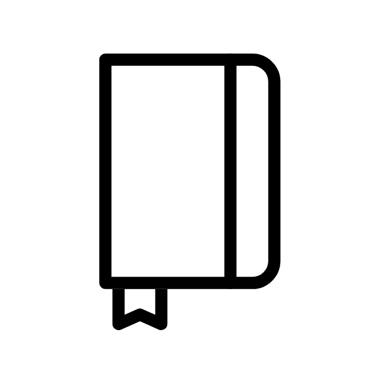

Bachelor Medieninformatik
Seit Oktober 2021
Technische Hochschule Brandenburg


Technische Hochschule Brandenburg

Martin Luther Universität Halle/Saale
Rhetorik, Sprechkunst, Phonetik, Phonologie, Kommunikation
Domgymnasium Merseburg
Durchschnitt 1,4
Stipendium für besondere schulische Leistungen und Engagement

Erstellung von E-Learning Kursen
Ausbildung externer Learning Engineers

Auswertung und Training der Kommunikation von Medizinstudenten an der Universität Leipzig

Erstellung von Lerneinheiten für Erasmusstudenten an der Burg Giebichenstein Kunsthochschule Halle/Saale
Auswertung und Training der Kommunikation von Medizinstudenten an der Martin Luther Universität Halle/Saale
Erstellung eines eigenen Lehrkonzeptes
1 mal wöchentlich Unterricht im Fach Theater
3 mal wöchentlich Unterricht im Fach Deutsch mit besonderem Fokus auf auditiver Förderung und Angstabbau
Erstellung eines eigenen Lehrkonzeptes
1 mal wöchentlich Unterricht im Fach Deutsch mit besonderem Fokus auf visueller und auditiver Förderung und Angstabbau
Dokumentation der Therapieeinheiten
Leitung eigener Therapiestunden bei Kleinkindern mit Sprach- und Sprechstörungen
Arbeit als Kinderbetreuung in finnischer Familie


Unterstützung der freien Theaterszene in Halle bei kleineren Projekten
Weiterbildung im Bereich Theaterpädagogik im Social Impact Lab
Praktikum im Kindergarten und Theater
Weiterbildung in Gesang und Musiktheorie am Konservatorium Halle
Promotionarbeit auf mehreren Messen

Rhetorik 2/5
Sprechbildung 4/5
Kommunikation 3/5
Pädagogik für Kinder 3/5
Erwachsenenbildung 4/5
Webentwicklung 1/5
Datenbanken 2/5
In meiner Freizeit male ich gerne. Am liebsten mit Acrylfarben und auf Leinwand. Außerdem versuche ich mir gerade das Joggen anzutrainieren.
Automarken. Ich schaffe es lediglich Autos nach ihren Farben zu unterscheiden.
Beim Essen muss ich ständig meine Finger aneinander reiben. Außerdem muss ich 2 Mal checken, ob der Herd aus ist, bevor ich die Wohnung verlasse.
Ich habe im Alter von 14 bis 20 Jahren Theater gespielt. In dieser sowieso sehr bewegenden Zeit war es sehr prägend, sich intensiv mit der Denkweise anderer Personen auseinanderzusetzen.
Gegenwind beim Radfahren und wenn Menschen in Filmen nicht auf die Straße schauen beim Autofahren.